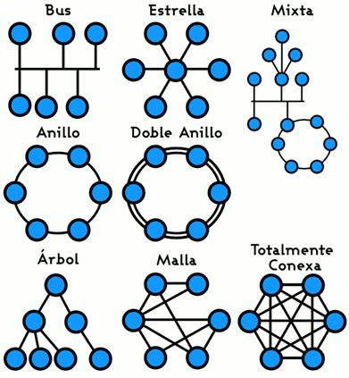

La topología de redes es un concepto fundamental en la tecnología moderna. Las redes se utilizan para conectar dispositivos y personas entre sí, permitiendo compartir información y recursos como archivos, impresoras, Internet y otros componentes críticos para el funcionamiento de las empresas y organizaciones. La topología se refiere a la forma en que se conectan y organizan los dispositivos en una red y esto puede tener un impacto significativo en el rendimiento, la escalabilidad y la seguridad de la red.
En términos generales, existen cuatro topologías principales de redes: bus, anillo, estrella y malla. Cada una de estas topologías tiene sus propias características únicas y ventajas y desventajas específicas. Comprender estas topologías es fundamental para entender cómo funcionan las redes y cómo se pueden optimizar para obtener el mejor rendimiento y seguridad.
La topología de bus es la más simple de todas las topologías y se utiliza a menudo en redes pequeñas. En esta topología, todos los dispositivos están conectados en serie a una línea de comunicación central, conocida como bus. Los datos se transmiten a través del bus a cada dispositivo, y cada dispositivo lee los datos y decide si la información es relevante para él. La gran ventaja de esta topología es su simplicidad, ya que sólo se necesita una conexión física para conectar todos los dispositivos. Sin embargo, si falla la línea del bus, todos los dispositivos dejan de comunicarse.
La topología de anillo es otra topología común, especialmente en grandes redes corporativas. En esta topología, los dispositivos se conectan en un círculo cerrado y los datos se transfieren de dispositivo a dispositivo en un solo sentido. La ventaja de esta topología es que si una conexión falla, la red aún puede seguir en funcionamiento, ya que el tráfico puede seguir circulando por el circuito. Sin embargo, esta topología puede ser más costosa y compleja que otras topologías, ya que se requiere un cableado adicional para garantizar que todos los dispositivos se conecten.
La topología de estrella es una de las topologías más populares; en ella, todos los dispositivos se conectan a un concentrador central, asumiendo el papel de centro de la red. Es una topología que permite la fácil gestión de la red y la detección de fallos, además de proporcionar un mayor nivel de seguridad, ya que cada dispositivo se comunica directamente con el concentrador central y no con los demás dispositivos. Sin embargo, la principal desventaja de esta topología es que, si el concentrador falla, toda la red queda inactiva.
La topología de malla es una topología altamente redundante en la que cada dispositivo está conectado directamente a todos los demás dispositivos de la red. Esta topología es ideal para grandes organizaciones y empresas que dependen críticamente de una red con alta disponibilidad. Aunque es bastante compleja, permite garantizar que siempre haya una ruta alternativa para que los datos puedan llegar a su destino en caso de que una ruta no esté disponible. La desventaja de esta topología es que es más difícil de implementar y puede requerir una mayor cantidad de recursos y costos para ponerla en marcha.
A medida que los avances en la tecnología de las redes continúan transformando la forma en que las empresas y organizaciones funcionan, estas topologías también se han ido adaptando a las nuevas necesidades del mercado. Hoy en día, hay varias topologías de redes emergentes, como la topología de árbol y la topología de malla jerárquica, entre otras.
La topología de árbol es una topología que combina características de la topología de estrella y la topología de bus. En esta topología, los dispositivos se organizan de forma jerárquica en una estructura similar a la de un árbol. Un dispositivo central, como un servidor o un switch, se coloca en la cima del árbol, y los dispositivos periféricos se conectan al centro a través de una serie de conexiones en cascada. El árbol puede extenderse según las necesidades de la red, añadiendo más dispositivos en cascada a cada nivel. Esta topología tiene la ventaja de aumentar la escalabilidad de la red y facilitar su gestión.
La topología de malla jerárquica es una topología que combina la topología de malla y la topología jerárquica. Esta topología se utiliza a menudo en grandes empresas y organizaciones gubernamentales que requieren redes altamente redundantes y seguras para sus operaciones. En una topología de malla jerárquica, se dividen los dispositivos en grupos y cada grupo se coloca en un nivel determinado de la jerarquía. Cada grupo se conecta directamente con los demás en el mismo nivel y sólo se puede acceder a través de dispositivos en niveles superiores. Esta topología tiene la ventaja de alta redundancia, escalabilidad, seguridad y facilidad de gestión.
En última instancia, la elección de una topología de red depende de varios factores, como las necesidades específicas de la empresa o organización, los recursos disponibles y los costos asociados. Al elegir una topología, se debe considerar la facilidad de gestión, la escalabilidad, la redundancia y la seguridad, y asegurarse de que la topología seleccionada sea compatible con el hardware y el software existentes. En conclusión, la topología de redes es un componente fundamental de la tecnología moderna, y la elección correcta de esta puede aumentar significativamente el rendimiento, la escalabilidad y la seguridad de la red.